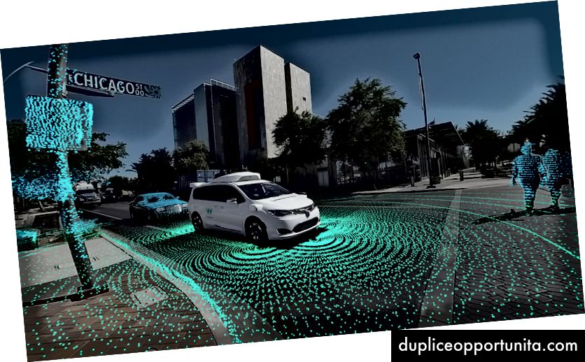

PENOSIL vaizdo įrašai apie PENOSIL produktų naudojimą
 Produktai Produktų grupės Nauji produktai Statybinės putos Hermetikai Sandarinimo juostos Klijai Paviršiaus padengimo priemonės Betono priedai Valikliai Įrankiai ir priedai Naudojimo sritys Nauji produktai Bendroji statyba Langai ir durys Stogas ir fasadas Apdaila Grindys Klijavimas Sanitarinės patalpos Vėdinimo sistema Atsparumas ugniai Valymas Įrankiai EasyPRO Visoms paskirtims Langams ir durims Stogams ir fasadams Virtuvėms ir vonioms Apdailai ir dažymui Įrankiai Sprendimai Informacijos centras Naujienos Apie mus Kontaktai Mano sąrašasPasirinkite šalį ir kalbą
Pasirinkite šalį ir kalbą
Global
English РусскийAustralia
EnglishBrazil
PortuguêsEstonia
Eesti keel РусскийFinland
SuomiFrance
FrançaisKazakstan
РусскийLatvia
Latviešu РусскийLithuania
LietuviųPoland
PolskiPortugal
PortuguêsRomania
RomâneșteRussia
РусскийSpain
EspañolUkraine
Українська РусскийUnited Kingdom
EnglishUruguay
EspañolUzbekistan
Русский Produktai Produktų grupės Nauji produktai Statybinės putos Hermetikai Sandarinimo juostos Klijai Paviršiaus padengimo priemonės Betono priedai Valikliai Įrankiai ir priedai Naudojimo sritys Nauji produktai Bendroji statyba Langai ir durys Stogas ir fasadas Apdaila Grindys Klijavimas Sanitarinės patalpos Vėdinimo sistema Atsparumas ugniai Valymas Įrankiai EasyPRO Visoms paskirtims Langams ir durims Stogams ir fasadams Virtuvėms ir vonioms Apdailai ir dažymui Įrankiai Sprendimai Informacijos centras Naujienos Apie mus Kontaktai Mano sąrašasPasirinkite šalį ir kalbą
Pasirinkite šalį ir kalbą
Global
English РусскийAustralia
EnglishBrazil
PortuguêsEstonia
Eesti keel РусскийFinland
SuomiFrance
FrançaisKazakstan
РусскийLatvia
Latviešu РусскийLithuania
LietuviųPoland
PolskiPortugal
PortuguêsRomania
RomâneșteRussia
РусскийSpain
EspañolUkraine
Українська РусскийUnited Kingdom
EnglishUruguay
EspañolUzbekistan
РусскийShopping cart
Krepšelis dar tuščias.
Total price: 0 €
Go to checkout Uždaryti vaizdo įrašąVaizdo įrašai
Sveiki atvykę į Penosil vaizdo įrašų kanalą – ieškokite ir sužinokite, kaip naudoti mūsų gaminius, naujienas bei naujausias tendencijas statybų pasaulyje. Čia rasite nuo „pasidaryk pats“ iki profesionalams skirtų vaizdo įrašų, viskas vienoje vietoje.
Kategorija: Visos Pasidaryk pats Sandarinimo sprendimai Sandarinimo putos Termoizoliacinės putos Klijuojančios putos Hermetikai Klijai Juostos Hidroizoliacija Dezinfekavimo priemonės Paviršiaus apsauga Rūšiuoti pagal: Populiariausi Įkėlimo data (naujausi) Įkėlimo data (seniausi)Kaip sandarinti langus su PENOSIL produktais?
Žiūrėti vaizdo įrašąPenosil Care dezinfekavimo priemonės
Žiūrėti vaizdo įrašąKaip sandarinti stogo įtrūkimus su Penosil Premium RainStop Membrane Fibre?
Žiūrėti vaizdo įrašąKaip užsandarinti stogų ir lietvamzdžių jungtis su Penosil Roof&Facade Elastic hermetiku?
Žiūrėti vaizdo įrašąMums Jūs rūpite! Penosil socialinė iniciatyva Sveikas oras
Žiūrėti vaizdo įrašąKaip apšiltinti murlotą su Penosil EasySpray šiltinimo putomis?
Žiūrėti vaizdo įrašąKaip sandarinti vidines duris su Penosil Window&Door šiaudelinėmis putomis?
Žiūrėti vaizdo įrašąSilikoninė remonto juosta Penosil Premium Repair Tape
Žiūrėti vaizdo įrašąKaip priklijuoti stiklinę lentynėlę su Penosil PremiumSpeedFix Hybryd Crystal 799 klijais?
Žiūrėti vaizdo įrašąKaip apšiltinti palėpės stogą su Penosil EasySpray termoizoliacinėm putom?
Žiūrėti vaizdo įrašąAtnaujinkite silikono siūles vonioje su Penosil Stop Fungi silikonu
Žiūrėti vaizdo įrašąPenosil EasySpray purškiamosios termoizoliacinės putos
Žiūrėti vaizdo įrašąKaip klijuoti grindjuostes ir durų apvadus su Penosil Premium SpeedFix Clear 909 montažiniais klijais?
Žiūrėti vaizdo įrašąLangų sandarinimas su Penosil Premium Air&Vapour Membrane
Žiūrėti vaizdo įrašąPenosil Premium SpeedFix High Tack 707 klijų savybės
Žiūrėti vaizdo įrašąKaip sandarinti vonią su Penosil Stop Fungi priešpelėsiniu silikonu?
Žiūrėti vaizdo įrašąKaip sandarinti vidaus duris su Penosil Window&Door Elastic sandarinimo putomis?
Žiūrėti vaizdo įrašąKaip sandarinti tarpą tarp stalviršio ir sienos su Penosil EasyPro All Purpose silikonu?
Žiūrėti vaizdo įrašąKaip apsaugoti betonines grindis nuo dulkių su Penosil Premium DustProofer?
Žiūrėti vaizdo įrašąKaip užsandarinti lango ir angokraščio jungtį su Penosil Painters dažomu silikonu?
Žiūrėti vaizdo įrašąDrėgnų patalpų izoliavimas nuo drėgmės su Penosil Premium AquaBrake Fiber
Žiūrėti vaizdo įrašąSandarumo testas, sandarinto namo su Penosil produktais
Žiūrėti vaizdo įrašąPenosil Premium SpeedFix All Interior 697 klijų savybės
Žiūrėti vaizdo įrašąPenosil EasyGun sandarinimo putų savybės
Žiūrėti vaizdo įrašąKaip užsandarinti elektros lizdus?
Žiūrėti vaizdo įrašąKaip užsandarinti lango apačią iš lauko su aliuminio butilo juosta?
Žiūrėti vaizdo įrašąKaip sandarinti stogo plėvelę su Penosil Premium Membrane Fix 629 klijais?
Žiūrėti vaizdo įrašąKaip sandarinti elektros kolektorius su Penosil Premium FastFoam 2K putomis?
Žiūrėti vaizdo įrašąAngokraščių šiltinimas su Penosil SpeedFix EPS&XPS 878 klijuojančiom putom
Žiūrėti vaizdo įrašąKaip apsišiltinti pamatus su Penosil SpeedFix EPS&XPS 878 klijuojančiom putom?
Žiūrėti vaizdo įrašąKaip sandarinti surenkamas perdangas su Penosil Roof&Facade hermetiku?
Žiūrėti vaizdo įrašąSurenkamų sąramų ir langų elementų sandarinimas su Penosil Roof&Facade hermetiku
Žiūrėti vaizdo įrašąJungties tarp grindų ir sienos sandarinimas su Penosil Roof&Facade hermetiku
Žiūrėti vaizdo įrašąA+ energinės klasės lango mazgo sandarinimas
Žiūrėti vaizdo įrašąKaip sandarinti langą iš vidaus su Penosil vidine langų sandarinimo juosta?
Žiūrėti vaizdo įrašąKaip klijuoti pertvaros blokelius su Penosil Premium StoneFix 827?
Žiūrėti vaizdo įrašąKaip užsandarinti terasinio lango apačią iš vidaus su EPDM tarpine?
Žiūrėti vaizdo įrašąKaip užsandarinti ertmę po durimis su Penosil Premium FastFoam 2K putomis?
Žiūrėti vaizdo įrašąKaip sandarinti langus Penosil Window&Door Elastic statybinėmis putomis?
Žiūrėti vaizdo įrašąKaip užsandarinti praustuvą su Penosil Stop Fungi silikonu?
Žiūrėti vaizdo įrašąKaip klijuoti parketą su Penosil Premium Floor&Wall ParquetFix 749?
Žiūrėti vaizdo įrašąLangų sandarinimas su elastingomis Penosil Window&Door Elastic putomis
Žiūrėti vaizdo įrašąKaip panaikinti pelėsį vonioje su Penosil StopFungi?
Žiūrėti vaizdo įrašąKaip išlyginti silikono siūlę su Penosil EasyPRO mentele spatula?
Žiūrėti vaizdo įrašąKaip apšiltinti fasadą su klijuojančiom putos SpeedFix EPS&XPS 878?
Žiūrėti vaizdo įrašąPenosil SpeedFix EPS&XPS 878 klijuojančių putų savybės
Žiūrėti vaizdo įrašąKaip priklijuoti terasinius apvadus su SpeedFix All Exterior 777?
Žiūrėti vaizdo įrašą Penosil Apie mus Naujienos Kontaktai Wolf Group DUK Produktai Produktų grupės Naudojimo sritys EasyPRO Sprendimai Langų sandarinimas Fasado sandarinimas Informacijos centras Vaizdo įrašai Dokumentai Produktų naudojimo vadovai Skaičiuoklės Mokomieji straipsniai Brėžiniai architektams Teisinė informacija Privatumo politika Produktai Sprendimai Kontaktai Dažniausiai užduodami klausimai Wolf Group Privatumo politika fb.com/PenosilLithuania/ PenosilUAB Krimelte LT © 2020
Mūsų tinklapyje naudojami slapukai, kad užtikrintume Jums geresnę naršymo kokybę.
Sužinokite daugiau apie tai, kaip tvarkome Jūsų duomenis. Sutinku RUS ENGВы будете перенаправлены на веб-сайт, принадлежащий Группе компаний «СтройСистема» – эксклюзивного представителя торговой марки PENOSIL в Российской Федерации.
Krimelte OÜ не несет ответственности за информацию, размещенную на этом веб-сайте.
Если желаете оставаться на русскоязычной версии веб-сайта Krimelte OÜ - производителя продукции по торговой маркой PENOSIL, выберите Global (по-русски) в меню.
You are being redirected to a website of GC "StroySistema" - the exclusive representative of PENOSIL trademark in the Russian Federation.
Krimelte OÜ disclaims any liability for the information posted on this website.
If you want to stay on the Russian language version of the website of Krimelte OÜ - the manufacturer of the products under PENOSIL trademark, please select Global (in Russian) in the menu.
PL ENG
Zostaniesz przekierowany na stronę należącą do Plonmar Sp.z.o.o., wyłącznego przedstawiciela marki PENOSIL w Polsce.
Krimelte OÜ nie ponosi odpowiedzialności za informacje zamieszczone na tej stronie.
Jeśli chcesz pozostać na oficjalnej wersji strony internetowej Krimelte OÜ, producenta produktów marki PENOSIL, wybierz opcję Global (in English) w menu.
You are being redirected to a website of GC "Plonmar Sp.z.o.o." - the exclusive representative of PENOSIL trademark in the Poland.
Krimelte OÜ disclaims any liability for the information posted on this website.
If you want to stay on the Russian language version of the website of Krimelte OÜ - the manufacturer of the products under PENOSIL trademark, please select Global (in English) in the menu.